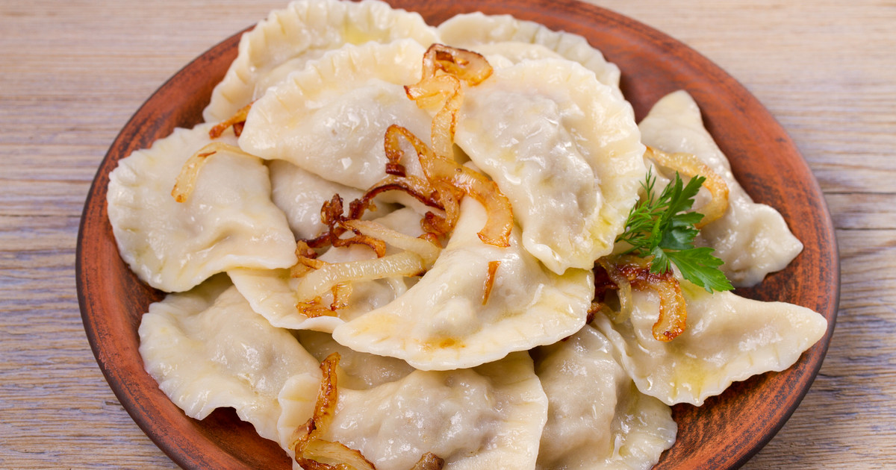

Pierogi

Polish bigos for me defines traditional Polish cuisine – hearty, deliciously comforting and great for sharing.
This dish is equally popular as a family meal (served with mashed potatoes or bread) as well as party food, accompanying all celebrations including weddings, christenings etc.
It has withstood the test of time and remains one of the most popular dishes in Poland today
Ingredients
Dough:
- 2 cups (240g) King Arthur Unbleached All-Purpose Flour
- 1/2 teaspoon salt
- 1 large egg
- 1/2 cup (113g) sour cream
- 4 tablespoons (57g) butter, room temperature
Filling:
- 1 cup (227g) mashed potatoes, warm
- 1 cup (113g) sharp cheddar cheese, shredded
To finish:
- 4 tablespoons (57g) butter, cold
- 2 large (156g) shallots, diced; or one medium (156g) onion, sliced
How to prepare:
- To make the dough: Mix together the flour and salt.
Add the egg to the flour and combine. The dough
will be quite clumpy at this stage.
- To make the filling: Combine the warm mashed potato and
cheese. Stir and mash until the cheese is melted and
the filling is cool to the touch. Taste and adjust the
seasonings with salt and pepper.
- To fill the pierogi: Roll half the dough 1/8" thick. Use a 2"
round cutter to cut circles of dough. Repeat with the
other half of the dough. Save the scraps; these can be
snipped into small pieces and added to simmering soups.